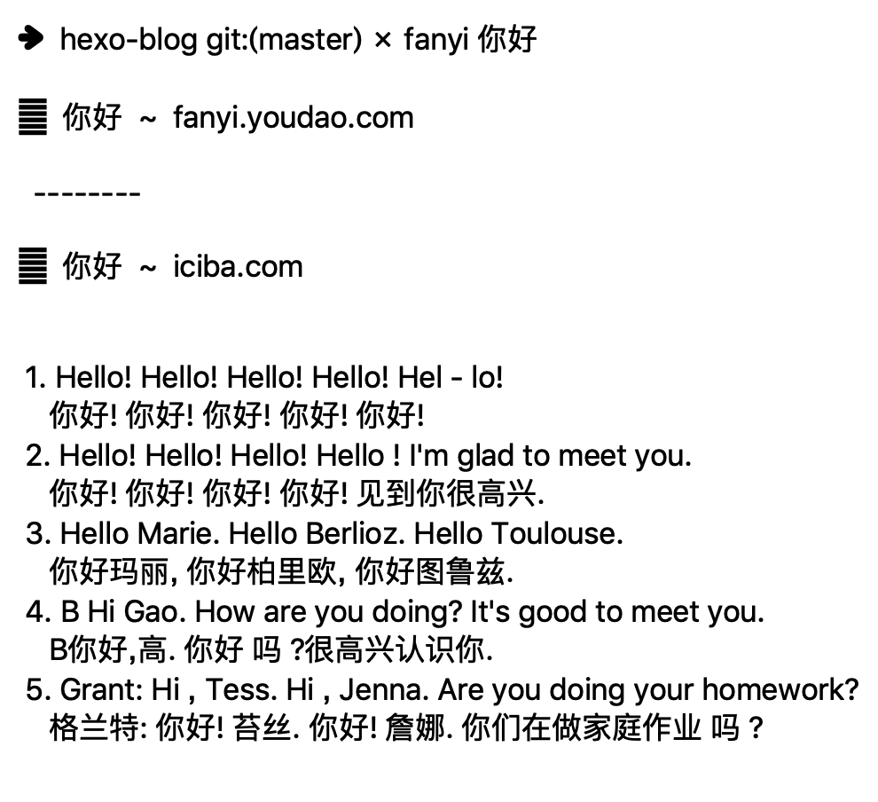

记录一些偶尔看到的不知名的，但是又非常方便的 npm 包
serve 静态服务器
作用：一个简单的，零配置的命令行http服务器
官网：https://github.com/zeit/serve1
2
3
4
5
6
7
8
9
10
11
12
13
14
15npm install serve -g
serve -l 5000 ./
// 也可以是一个服务器的中间件
// serve 的核心是 serve-handler
const handler = require('serve-handler');
const http = require('http');
const server = http.createServer((request, response) => {
return handler(request, response);
})
server.listen(3000, () => {
console.log('Running at http://localhost:3000');
});
http-serve 静态服务器
作用：一个简单的，零配置的命令行http服务器
官网：https://github.com/indexzero/http-server1
2
3
4
5npm install http-server -g
// http-server [path] [options]
http-server ./ -p 5000
// or
http-server -p 5000 ./
rimraf 删除文件
作用：以包的形式包装rm -rf命令，删除的极快
官网：https://github.com/isaacs/rimraf1
2
3npm install rimraf -g
# 或
npm install rimraf --save-dev
1 | rimraf node_modules |
david 过期的依赖包
作用：帮你找到已经过期的依赖包
官网：https://github.com/alanshaw/david1
2
3
4
5
6
7
8
9
10
11
12
13
14
15
16
17
18
19
20
21
22var fs = require('fs');
var david = require('david')
fs.readFile('./package.json', 'utf-8', function (err, data) {
if (err) {
return console.error(err);
}
var manifest = data.toString();//将二进制的数据转换为字符串
manifest = JSON.parse(manifest);//将字符串转换为json对象
console.log('输出json', manifest);
david.getDependencies(manifest, function (er, deps) {
console.log('latest dependencies information for', manifest.name);
listDependencies(deps);
});
})
function listDependencies (deps) {
Object.keys(deps).forEach(function (depName) {
var required = deps[depName].required || '*';
var stable = deps[depName].stable || 'None';
var latest = deps[depName].latest;
console.log('%s Required: %s Stable: %s Latest: %s', depName, required, stable, latest);
});
}
localtunnel 内网穿透
localtunnel：把本机服务暴露到外网
官网：https://github.com/localtunnel/localtunnel
1 | npm install -g localtunnel |
fanyi 翻译工具
作用：翻译工具，可以翻译汉语，也可以翻译英语，带耳机的话，还可以听到声音
特别有意思1
2
3npm install fanyi -g
fanyi 你好
